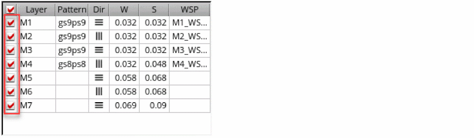
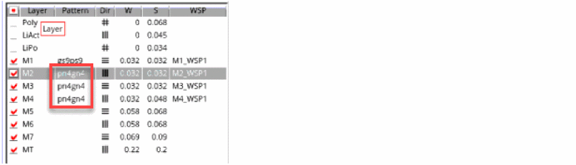
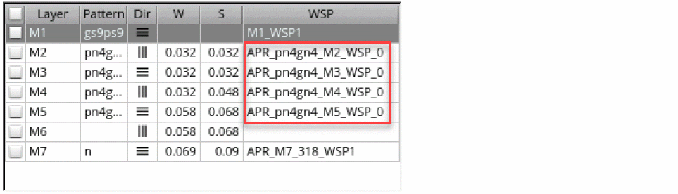
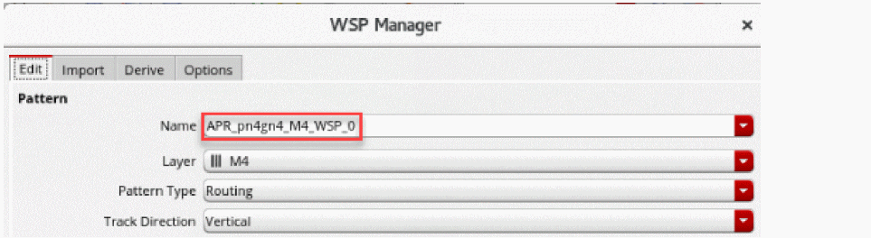
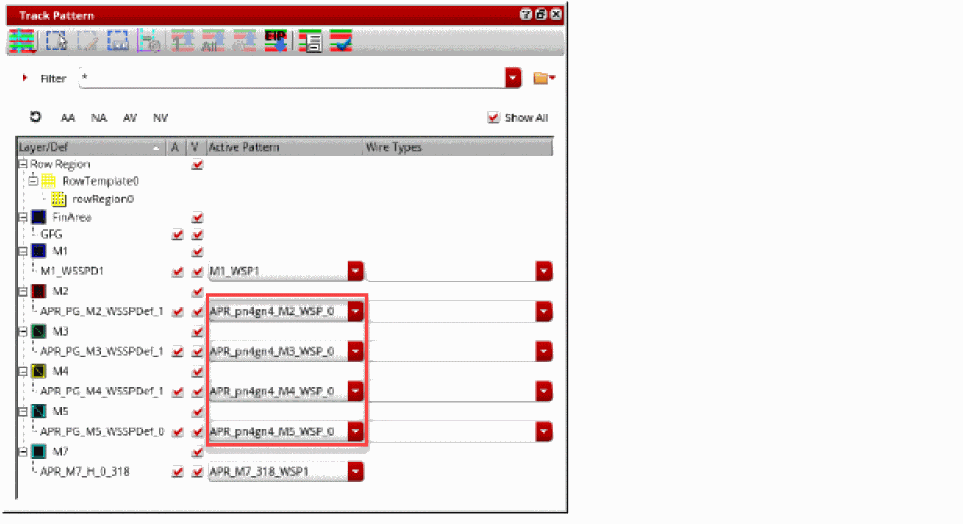

Generating Width Spacing Patterns for Device-level Routing
In automated routing technology, you can use one of the following methods to generate WSPs:
This topic covers the method of generating WSPs automatically. For information on the other methods, see
To automatically generate WSPs:
- Open a design in Layout MXL.
-
Choose Window – Assistants – Routing.
Alternatively, right-click anywhere on the layout window menu bar and choose Assistants – Routing. -
In the Setup tab, select the bottom and top routing layers from the Bottom and Top drop-down list.
Specifying valid routing layers updates the WSPs visible in the table and specifies which layers the router should use for routing. -
Either select all layers or the required layers on which you want to generate WSPs.
 -
Specify a pattern in the Pattern column of the layer table. This is to allocate tracks for supply wire types to generate the supply grid on selected layers.
The Map WSP Wire Types to Symbols Form shows the character or symbol –wireTypemapping in the WSP to be created. These characters or symbols are used in the pattern string. -
Click Auto-generate WSPs
at the bottom of the Routing assistant.
WSPs are automatically generated for the selected metal layers.
In certain nodes, local grids are generated for the lowest metal layer when the design is a non-uniform design. This makes the WSP column against the lowest metal layer for which the local grids are created go blank. These local grids can be seen in the track pattern assistant by selecting the Show All option. - Select any layer in the layer table to view the attributes of the automatically created WSP.
-
Click the Show WSP Manager
 button at the bottom of the Routing assistant.
button at the bottom of the Routing assistant.
The WSP attributes of the selected layer are displayed.
 - Choose Window – Assistant – Track Pattern from the layout window menu bar to open the Track Pattern assistant.
-
Select Show All.
You can see the pattern-based auto-generated WSPs prefixed withAPR_.
 - In the Routing Assistant, click Snap pins to WSPs and see that the IO pins can snap to the generated WSPs.
Related Topics
Configuring Device-Level Router Settings
Checking Layout Routability after Generating Grids and Running Device Placer
Return to top